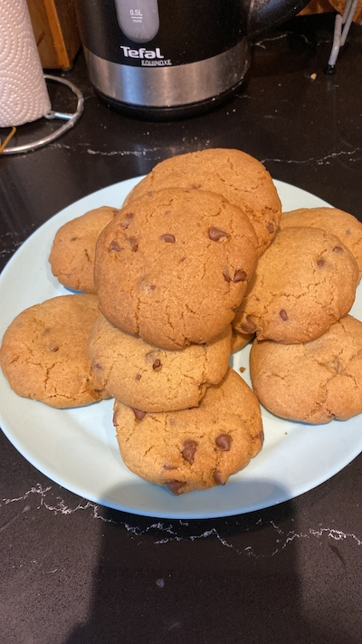

Choc-Chip Cookies

Description
Choc-chip cookies. Need I say more?
Link to the original recipe: here!
Ingredients
- 2.25 cups (280g) all-purpose flour
- 1 teaspoon baking soda
- 1.5 teaspoons of cornstarch
- 0.5 teaspoons of salt
- 3/4 cup (1.5 sticks or 170g) of unsalted butter, melted and cooled 5 minutes
- 3.4 cup (150g) packed light or dark brown sugar
- 0.5 cup (100g) granulated sugar
- 1 large egg + 1 egg yolk at room temperature
- 2 teaspoons pure vanilla extract
- 1 and 1/4 cups (225g) semi-sweet chocolate chips or chocolate chunks
Directions
- Whisk dry ingredients in a large bowl. Set aside.
- In a medium bowl, whisk melted butter, sugar and granulated sugar, removing all lumps. Whisk in egg and egg yolk, finally whisking in the vanilla extract.
- Pour into dry ingredients and mix well with large sppoon or spatula. Dough should be soft, thick and appear greasy. Folt in choc-chips.
- Cover dough tightly and chill in refrigerator for at least 2-3 hours or up to 3 days.
- Allow dough to soften at room temperature for 10 minutes.
- Preheat overn to 165°C. Line large baking tray with parchment paper. Set aside.
- Roll a bit of cooke dough, making sure the shap is taller rather than wide. Place 8-9 balls onto each sheet.
- Bake cookies for 12-13 minutes, or until edges are lightly browned (larger cookies should take longer).
- Cool cookies on baking sheet for 10 minutes.